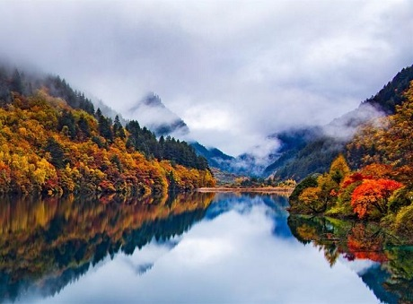
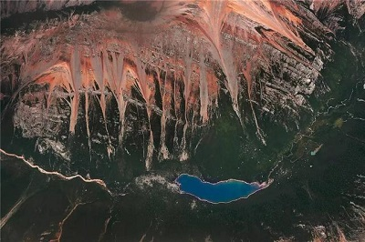
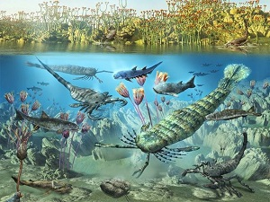

九寨沟
九寨沟位于四川省阿坝藏族羌族自治州九寨沟县境内。地处青藏高原、川西高原、山地向四川盆地过渡地带，南距成都市300多公里，是一条纵深50余千米的山沟谷地，总面积64297公顷，森林覆盖率超过80%。因沟内有树正寨、荷叶寨、则查洼寨等九个藏族村寨坐落在这片高山湖泊群中而得名。现为世界自然遗产、国家重点风景名胜区、国家AAAAA级旅游景区、国家级自然保护区、国家地质公园、世界生物圈保护区网络，是中国第一个以保护自然风景为主要目的的自然保护区。
九寨沟国家级自然保护区主要保护对象是以大熊猫、金丝猴等珍稀动物及其自然生态环境。有74种国家保护珍稀植物，有18种国家保护动物，还有丰富的古生物化石、古冰川地貌。
“九寨归来不看水”，是对九寨沟景色真实的诠释。泉、瀑、河、滩108个海子，构成一个个五彩斑斓的瑶池玉盆。长海、剑岩、诺日朗、树正、扎如、黑海六大景观，呈“Y”字形分布。翠海、叠瀑、彩林、雪峰、藏情、蓝冰，被称为“六绝”。神奇的九寨，被世人誉为“童话世界”，号称“水景之王”。
2017年8月9日起，受地震影响，九寨沟景区于停止接待游客 。2019年9月27日九寨沟景区试开园 。11月28日起九寨沟景区对散客开放 。2020年8月18日起，持续强降雨致道路受阻，九寨沟景区临时闭园 。8月22日景区开放 。
历史沿革
千百年来，九寨沟隐藏在川西北高原的崇山峻岭中，人类的活动显得微不足道。本区藏民几乎与世隔绝，过着自给自足的农牧生活。由于山高路远，九寨沟一向鲜为人知。
1975年，国家农林渔业部的一个工作组对九寨沟进行了综合考察，并得出了"九寨沟不仅蕴藏了丰富、珍贵的动植资源，也是世界上少有的优美风景区"的结论。同年著名林学家吴中伦教授对九寨沟进行了较为全面的考察。他身临其境，感慨万千："我曾到过欧美数国，也未见到有这样奇美的自然景色，必须很好保护起来"，他立即告知省林业厅并上书四川省政府。省林业厅立即行文南坪县林业局："九寨沟则查洼、日则沟两百米以外才能砍伐"。这是林业部门保护九寨沟的最早措施。
1977年，四川省珍稀动物资源调查队，写出了《四川省珍稀动物资源调查报告》，建议将南坪县白河自然保护区扩建至九寨沟区域内。
1978年8月，中科院成都生物研究所提出了在九寨沟建立自然保护区的必要性，引起了四川省委的高度重视。11月30日，有关部门下令停止在九寨沟采伐木材。1978年12月15日，国务院以国发（1978）256号文件批准国家林业总局"关于加强大熊猫保护、驯养工作的报告"，批准建立南坪县九寨沟自然保护区管理所。1978年国务院国发（1978）34号文件规定将九寨沟划为自然风景保护区，保护区面积为620平方公里。
1979年，进驻九寨沟的两个林场迁出。同年，根据四川省革命委员会"关于加强自然保护区建设的通知"（川革发[1979]36号）文件精神，成立四川省南坪县九寨沟自然保护区管理所。
1982年国发（1982）136号文批准城乡建设环境等部门审定第一批国家重点风景名胜区的请示的通知，把南坪九寨沟定为风景名胜区。
1983年，"四川省南坪县九寨沟保护区管理所"更名为"四川南坪九寨沟自然保护区管理处"。同年，省政府以川府发（1983）168号文确定九寨沟自然保护和风景名胜由"四川南坪九寨沟自然保护区管理处"统一管理，管理处级别为区科级，由南坪县直接领导。
1984年，国务院以国发（1984）136号文件将九寨沟划为第一批国家重点风景名胜区，相应建立了南坪县九寨沟风景名胜区管理局，九寨沟正式对外开放。
1985年，成立九寨沟旅游公司，对旅游行为进行统一管理。
1987年1月20日，中华人民共和国城乡建设保护部（87）24号文批准了九寨沟总体规划，风景区范围为720平方公里，外围保护地带为600平方公里。九寨沟的建设从此走上了正轨。
1989年，建立九寨沟镇，形成管理处、管理局、镇政府三块牌子、一套班子统一管理九寨沟。同年4月20日，九寨沟风景名胜区管理局加入中国风景名胜区协会。
1992年12月14日，九寨沟经联合国教科文组织世界遗产委员会16届会议批准被列入《世界自然遗产名录》，从而成为具有世界意义和突出价值而需要全世界共同承担保护责任的自然遗产地。
1993年，形成管理处、管理局两块牌子、一套班子的管理体制。
1994年7月，林业部以林函护字（1994）174号文确认九寨沟为国家级自然保护区，旨在保护大熊猫、金丝猴等珍稀动物及其自然生态环境。
1995年9月14日，九寨沟加入了中国人与生物圈保护区网络，并列入世界人与生物圈保护区推荐名录。
1997年10月29日，九寨沟加入世界生物圈保护区网络，成为联合国教科文组织发起的关于人与环境关系全球性科学计划的内容之一。
1998年5月26日，联合国教科文组织和中科院为九寨沟自然保护区颁发了"世界生物圈保护区"证书。同年11月7日，成立了以州、县领导为主的九寨沟管理委员会。
2000年3月，根据国家林业局林护发（2000）131号文要求，"九寨沟国家级自然保护区管理处"更名为"九寨沟国家级自然保护区管理局"。同年10月，升格为州政府直属的正县级事业单位，实行"以州为主，州县共管"的管理体制。
2001年2月12日，九寨沟通过"绿色环球'21"初步认证。绿色环球组织亚洲总部设在澳大利亚，吸收在环境保护和生态旅游方面有突出成绩的旅游目的地和旅游企业加入该组织，并作为最佳旅游目的地和最佳旅游企业向全世界的旅游者推荐。2002年6月20日，专家组对九寨沟进行了正式评审。
2017年8月8日21时19分46秒在四川省北部阿坝州九寨沟县发生7.0级地震，震中位于九寨沟核心景区西部5公里处比芒村。
2018年3月8日起，九寨沟景区部份景观将恢复开放。开放区域为九寨沟景区沟口至长海段沿途景观，实行专车专导，团队游览方式。
2019年9月27日，经四川省政府批准，因地震和泥石流关闭的九寨沟景区准备试开园。 9月26日晚，九寨沟重新开园后的第一批游客抵达景区附近的酒店。据悉，为确保旅游服务保障满足开园要求，在食宿保障方面，九寨沟县还制定了涉旅企业、个体准入审核清单，对九寨沟景区核心区域酒店、饭店进行全覆盖审核准入，预计200余家餐馆饭店能够正常营业，宾馆酒店可提供床位超1万余张 。11月28日，九寨沟风景名胜区管理局发布《九寨沟景区关于部分区域对外开放（试运行）补充通告》，根据九寨沟景区灾后恢复重建推进和试运行情况，景区现对散客旅游开放 。
2020年8月18日起，持续强降雨致道路受阻，九寨沟景区临时闭园。 8月22日景区开放。9月26日，据四川阿坝州九寨沟管理局消息，火花海将于国庆前夕开放 。
地理环境
地貌
九寨沟自然保护区地势南高北低，山谷深切，高差悬殊，区北缘九寨沟口海拔仅2000米，中部峰岭均在4000米以上，南缘达4500米以上，主沟长30多公里。峰顶和两侧山峰基本终年积雪。九寨沟地处青藏高原向四川盆地过渡地带，地质背景复杂，碳酸盐分布广泛，褶皱断裂发育，新构造运动强烈，地壳抬升幅度大，多种营力交错复合，造就了多种多样的地貌，发育了大规模喀斯特作用的钙华沉积，以植物喀斯特钙华沉积为主导，形成九寨沟艳丽典雅的群湖，奔泻湍急的溪流，飞珠溅玉的瀑群，古穆幽深的林莽，连绵起伏的雪峰。
气候
九寨沟海拔约3000米，属高原湿润气候。九寨沟春天气温较低变化较大，平均气温多在9-18℃之间，4月天气前有冻土及残雪；九寨夏天气温回升较快且稳定。平均气温在19-22℃，夜晚较凉宜备薄毛衣；秋天天高气爽气候宜人，气温多在7-18℃，昼夜温差较大，特别是10月后的深秋。10月下旬后有冻土出现；冬季较寒冷、气温多在0℃左右。中心地带的诺日朗，年均温7.3℃。九寨沟降雨少（年降雨量不足600mm）而集中，7-8月是典型的雨季。
水文
九寨沟自然保护区内有108个高山湖泊，它们大部分成群分布，面积大小不同，小的半亩，大的千亩以上。一条沟有如此之多的高山湖泊，这在全国、全世界也找不到第二条。九寨沟有许多天池，其中最大的长达7公里，天池的四周覆盖着郁郁葱葱的原始森林。九寨沟大型瀑布有17处，为九寨沟诺日朗瀑布。保护区内最大的湖泊为长海子，它由此向南达7公里。
地理位置
九寨沟位于四川省西北部岷山山脉南段的阿坝藏族羌族自治州九寨沟县漳扎镇境内，地处岷山南段弓杆岭的东北侧。距离成都市400多千米。地理坐标东经（E）100˚30΄-104˚27΄，北纬（N）30˚35΄-34˚19΄。系长江水系嘉陵江上游白水江源头的一条大支沟，流域面积651.34km。
旅游资源
翠海
水，是九寨沟的精灵，而九寨沟的海子（湖泊）更具特色，湖水终年碧蓝澄澈，明丽见底，而且随着光照变化、季节推移，呈现不同的色调与水韵。秀美的，玲珑剔透；雄浑的，碧波不倾；平静的，招人青睐，每当风平浪静，蓝天，白云，远山，近树，倒映湖中。水上水下，虚实难辩，梦里梦外，如幻如真。一湖之中鹅黄，黛绿，赤褐，绛红，翠碧等色彩组成不规则的几何图形，相互浸染，斑驳陆离。视角移动，色彩亦变，一步一态，变幻无穷。整个沟内，奇湖错落，目不暇接。百余个湖泊，个个古树环绕，奇花簇拥。湖泊都由激流的瀑布连接，各具特色，变幻无穷。
叠瀑
九寨沟是水的世界，也是瀑布王国。所有的瀑布全都从密林里狂奔出来。这里有宽度居全国之冠的诺日朗瀑布，它在高高的翠岩上急泻倾挂，似巨幅品帘凌空飞落，雄浑壮丽。有的瀑布从山岩上腾越呼啸，几经跌宕，形成叠瀑，似一群银龙竟跃，声若滚雪，激溅起无数小水珠，化作迷茫的水雾。朝阳照射，常常出现奇丽的彩虹，使人赏心悦目，流连忘返。
彩林
被誉为九寨沟六绝之一的彩林，覆盖了景区一半以上的面积，2000余种植物，争奇斗艳，林中奇花异草，色彩绚丽，沐浴在朦胧迷离的雾霭中的孓遗植物，浓绿阴森，神秘莫测，林地上积满厚厚的苔藓，散落着鸟兽的翎毛。充满着原始气息的森林风貌，使人产生一种浩渺幽远的世外天地之感。3万顷莽莽苍苍的原始森林，随着季节的变化，呈现出种种奇丽风貌。
雪峰
九寨沟山峰挺拔。冬季皑皑雪峰，尽收眼底。艳阳下的冰斗，让人头晕目眩。尕尔纳山上，极目远眺，山峦逶迤，深谷幽壑。满天星斗，一览无余。云海连天，絮浪翻腾，峰峦锋锷，时隐时现。
藏情
九寨沟在历史上就是民族融合的大走廊，在地理上处于青藏高原东北边缘向四川盆地过渡地带，在文化上处于藏区向汉区、牧区向农区过渡地带，因此其文化呈现出浓郁的边缘文化色彩和博大自由的包容性。藏族同胞一方面保持着自身独特的文化传统，如神秘的原始宗教，繁复的建筑风格、服饰风格，热情奔放的节日盛典等；另一方面，他们和周围羌、回、汉各民族和睦相处，彼此影响和渗透，形成多元的文化格局。勤劳、勇敢、智慧、质朴的藏族人民繁衍生息在这块富饶而又神奇的土地上，创造了辉煌、璀璨的藏族文化，为中华民族文化宝库增添了奇光异彩。
蓝冰
九寨沟国家自然保护区内的蓝色冰瀑，凭借陡峭的岩壁挂起巨大的天然冰雕，蓝如碧晴，由浅而深，冰清玉洁，奇异多姿。还有巨大的冰柱、冰球、冰挂和冰幔，以璀璨耀眼的冰晶世界一同构建一个幽蓝澄澈的水体胜境。
动植物保护
九寨沟国家级自然保护区主要保护对象是以大熊猫、金丝猴等珍稀动物及其自然生态环境。区内高等植物中有74种国家保护的珍稀植物，其中国家一级保护植物有银杏、红豆杉和独叶草3种，二级保护植物66种，主要集中在兰科（43种），列入中国濒危植物红皮书的植物5种。有国家一、二级保护动物18种，其中，一级4种、二级14种，代表种有大熊猫、川金丝猴等。包括保护区还有丰富的古生物化石，古冰川地貌十分发育。
价值意义
九寨沟国家自然保护区是岷山山系大熊猫A种群的核心地和走廊带，具有典型的自然生态系统，为全国生物多样性保护的核心之一。动植物资源丰富，具有极高的生态保护、科学研究和美学旅游价值。区内生物多样性丰富，物种珍稀性突出。九寨沟又是以高山湖泊群、瀑布、彩林、雪峰、蓝冰和藏族风情并称“九寨沟六绝”，被世人誉为“童话世界”，号称“水景之王”。九寨沟还是以地质遗迹钙化湖泊、滩流、瀑布景观、岩溶水系统和森林生态系统为主要保护对象的国家地质公园，具有极高的科研价值。